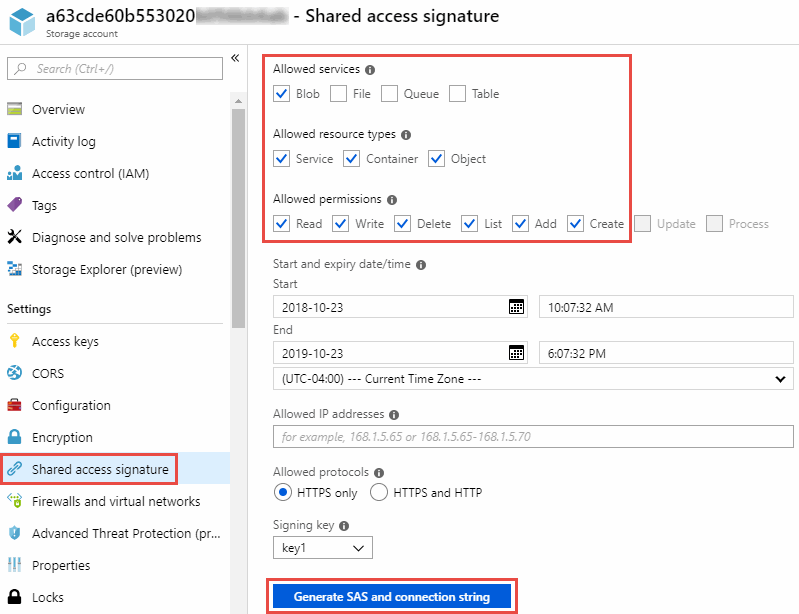

要求變更文件
要求變更文件 編輯此頁面
編輯此頁面 瞭解如何作出貢獻
瞭解如何作出貢獻準備來源和目標
確認您的來源和目標符合下列要求。
網路
-
來源和目標必須與資料代理群組建立網路連線。
例如、如果您的資料中心有NFS伺服器、而且資料代理程式位於AWS中、則您需要從網路連線（VPN或Direct Connect）到VPC。
-
NetApp建議將來源、目標和資料代理人設定為使用網路時間傳輸協定（NTP）服務。三個元件之間的時間差異不應超過 5 分鐘。
目標目錄
建立同步關係時Cloud Sync 、利用支援功能、您可以選取現有的目標目錄、然後在該目錄中建立新的資料夾（可選）。因此請確定您偏好的目標目錄已經存在。
讀取目錄的權限
為了顯示來源或目標中的每個目錄或資料夾、Cloud Sync 需要目錄或資料夾的讀取權限。
- NFS
-
必須在來源/目標上定義權限、並在檔案和目錄上使用uid / gid。
- 物件儲存
-
-
對於AWS和Google Cloud、資料代理程式必須擁有清單物件權限（如果您依照資料代理程式的安裝步驟執行、預設會提供這些權限）。
-
對於Azure、StorageGRID 物件和IBM、您在設定同步關係時輸入的認證資料必須具有清單物件權限。
-
- 中小企業
-
設定同步關係時輸入的SMB認證必須具有清單資料夾權限。

|
資料代理程式預設會忽略下列目錄：.snapshot、~snapshot、.Copy-卸 載 |
Amazon S3儲存桶需求
請確定您的Amazon S3儲存庫符合下列要求。
Amazon S3支援的資料代理位置
包含 S3 儲存設備的同步關係需要部署在 AWS 或內部部署的資料代理程式。無論是哪一種情況 Cloud Sync 、安裝期間、資訊中心都會提示您將資料代理程式與 AWS 帳戶建立關聯。
支援的 AWS 區域
除了中國地區以外、所有地區都受到支援。
其他 AWS 帳戶中 S3 儲存區所需的權限
設定同步關係時、您可以指定S3儲存區、該儲存區位於與資料代理程式無關的AWS帳戶中。
"此 Json 檔案所含的權限" 必須套用至該S3儲存區、資料代理人才能存取該儲存區。這些權限可讓資料代理人將資料複製到儲存庫、或從儲存庫複製資料、並列出儲存庫中的物件。
請注意以下關於 Json 檔案所含權限的資訊：
-
_<BucketName>_是儲存在AWS帳戶中、與資料代理程式無關的儲存區名稱。
-
<RoleARN> 應更換為下列其中一項：
-
如果資料代理程式是手動安裝在Linux主機上、則_ROLeARN_應該是AWS使用者的ARN、您在部署資料代理程式時會提供AWS認證。
-
如果使用CloudForation範本在AWS中部署資料代理程式、則_RoleARN_應該是範本所建立之IAM角色的ARN。
您可以前往 EC2 主控台、選取資料代理執行個體、然後按一下「 Description （說明）」索引標籤中的 IAM 角色、以找到角色 ARN 。接著、您應該會在 IAM 主控台中看到「摘要」頁面、其中包含角色 ARN 。

-
Azure Blob 儲存需求
請確定您的 Azure Blob 儲存設備符合下列需求。
Azure Blob 支援的資料代理程式位置
當同步關係包含Azure Blob儲存設備時、資料代理程式可位於任何位置。
支援的 Azure 地區
除了中國、美國 Gov 和美國 DoD 地區之外、所有地區都受到支援。
包括Azure Blob和NFS/SMB之關係的連線字串
在 Azure Blob 容器和 NFS 或 SMB 伺 Cloud Sync 服器之間建立同步關係時、您需要提供含有儲存帳戶連線字串的功能：

如果您想要在兩個 Azure Blob 容器之間同步資料、則連線字串必須包含 a "共享存取簽名" （ SAS ）。您也可以選擇在 Blob 容器與 NFS 或 SMB 伺服器之間同步時使用 SAS 。
SAS 必須允許存取 Blob 服務和所有資源類型（服務、容器和物件）。SAS 也必須包含下列權限：
-
對於來源 Blob 容器：讀取並列出
-
對於目標 Blob 容器：讀取、寫入、清單、新增及建立

Azure Data Lake儲存設備第2代
建立包含Azure Data Lake的同步關係時、您需要提供Cloud Sync 含有儲存帳戶連線字串的功能。它必須是一般連線字串、而非共用存取簽章（SAS）。
需求 Azure NetApp Files
在 Azure NetApp Files 將資料同步至或從支援中心同步時、請使用 Premium 或 Ultra 服務層級。如果磁碟服務層級為「 Standard （標準）」、您可能會遇到故障和效能問題。

|
如果您需要協助判斷適當的服務層級、請洽詢解決方案架構設計師。磁碟區大小和磁碟區層會決定您可以獲得的處理量。 |
Box需求
-
若要建立包含Box的同步關係、您必須提供下列認證資料：
-
用戶端ID
-
用戶端機密
-
私密金鑰
-
公開金鑰ID
-
通關密碼
-
企業ID
-
-
如果您從Amazon S3建立同步關係至Box、則必須使用統一組態的資料代理人群組、其中下列設定設為1：
-
掃描器並行性
-
掃描器處理程序限制
-
Transferrer並行性
-
Transferrer處理程序限制
-
Google Cloud Storage 儲存桶需求
請確定您的 Google Cloud Storage 儲存庫符合下列需求。
Google Cloud Storage 支援的資料代理商位置
包括Google Cloud Storage在內的同步關係需要部署在Google Cloud或內部部署的資料代理商。建立同步關係時、可利用此功能引導您完成資料代理程式的安裝程序。 Cloud Sync
支援的 Google Cloud 地區
支援所有地區。
其他Google Cloud專案中的儲存區權限
設定同步關係時、如果您提供資料代理商服務帳戶所需的權限、您可以從不同專案的Google Cloud儲存庫中進行選擇。 "瞭解如何設定服務帳戶"。
SnapMirror 目的地的權限
如果同步關係的來源是 SnapMirror 目的地（唯讀）、「讀取 / 清單」權限就足以將資料從來源同步至目標。
NFS 伺服器需求
-
NFS 伺服器可以是 NetApp 系統或非 NetApp 系統。
-
檔案伺服器必須允許資料代理主機透過所需的連接埠存取匯出。
-
111 TCP / udp
-
2049 TCP/IP
-
5555 TCP / udp
-
-
支援 NFS 版本 3 、 4.0 、 4.1 和 4.2 。
必須在伺服器上啟用所需的版本。
-
如果您想要從 ONTAP 某個支援系統同步 NFS 資料、請確定已啟用 SVM 的 NFS 匯出清單（已啟用 vserver NFS modify -vserver svm_name -showmount ）。
showmount 的預設設定為「啟用 _ 」、從 ONTAP SURF9.2 開始。
需求 ONTAP
如果同步關係包含Cloud Volumes ONTAP 了不同步或內部ONTAP 使用的叢集、而您選擇NFSv4或更新版本、則需要在ONTAP 不同步系統上啟用NFSv4 ACL。這是複製ACL所必需的。
SS3 儲存需求 ONTAP
當您設定包含的同步關係時 "SS3 儲存設備 ONTAP"、您需要提供下列項目：
-
連接 ONTAP 到 SS3 的 LIF IP 位址
-
設定使用的存取金鑰和秘密金鑰 ONTAP
SMB 伺服器需求
-
SMB 伺服器可以是 NetApp 系統或非 NetApp 系統。
-
您需要提供Cloud Sync 對SMB伺服器具有權限的認證資料。
-
對於來源SMB伺服器、需要下列權限：清單和讀取。
來源SMB伺服器支援Backup Operators群組成員。
-
對於目標SMB伺服器、需要下列權限：清單、讀取和寫入。
-
-
檔案伺服器必須允許資料代理主機透過所需的連接埠存取匯出。
-
139 TCP
-
445 TCP
-
137-138 udp
-
-
支援 SMB 1.0 、 2.0 、 2.1 、 3.0 和 3.11. 版。
-
授予「系統管理員」群組對來源和目標資料夾具有「完全控制」權限。
如果您未授予此權限、資料代理程式可能沒有足夠的權限、無法取得檔案或目錄上的 ACL 。如果發生這種情況、您將會收到下列錯誤：「 getxattr 錯誤 95 」
隱藏目錄和檔案的 SMB 限制
SMB 限制會在 SMB 伺服器之間同步資料時、影響隱藏的目錄和檔案。如果來源 SMB 伺服器上的任何目錄或檔案透過 Windows 隱藏、則不會將隱藏屬性複製到目標 SMB 伺服器。
SMB 同步行為是因為不區分大小寫的限制
SMB 傳輸協定不區分大小寫、這表示大小寫字母會被視為相同。如果同步關係包含 SMB 伺服器、且目標上已存在資料、則此行為可能會導致覆寫檔案和目錄複製錯誤。
例如、假設來源上有一個名為「 A 」的檔案、而目標上有一個名為「 A 」的檔案。當將名為「 A 」的檔案複製到目標時、檔案「 A 」會被來源的檔案「 A 」覆寫。 Cloud Sync
就目錄而言、假設來源上有一個名為「 b 」的目錄、而目標上有一個名為「 B 」的目錄。當試圖將名為「 b 」的目錄複製到目標時、會收到錯誤訊息指出該目錄已經存在。 Cloud Sync Cloud Sync因此 Cloud Sync 、無法複製名為「 b 」的目錄。
避免此限制的最佳方法是確保您將資料同步至空白目錄。